Balchik
It is famous with the Balchik Palace (Quiet Nest Palace) which is fully open to visitors. The palace was constructed between 1926 and 1937, during the Romanian control of the region, for the needs of Queen Marie of Romania.
- 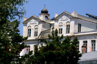
building - 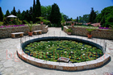
pond - 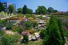
beautiful_garden - 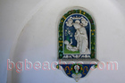
Christiandom - 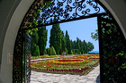
gateway - 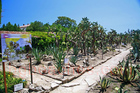
cactus - 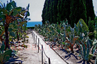
cactus2 - 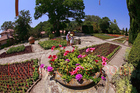
petunia - 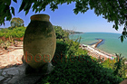
jar - 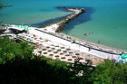
beach - 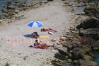
beach2 - 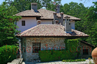
residence - 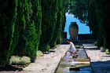
cypress - 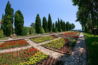
Balchik045
wine- 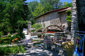
Balchik053 - 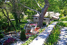
Balchik054 - 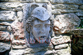
fountain - 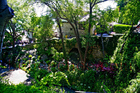
greenery - 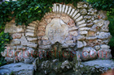
fountain2
stone_ware- 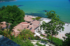
view2 - 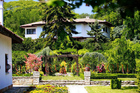
beautiful_spot - 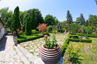
botanical_garden - 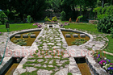
garden
yellow_lily- 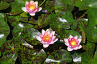
pink_lily - 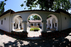
Balchik076 - 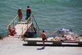
beach3 - 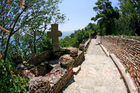
Balchik078 - 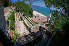
labyrinth - 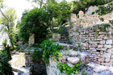
steps - 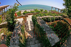
panorama - 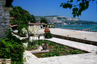
view - 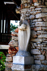
statue - 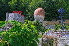
motive - 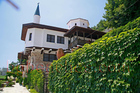
palace - 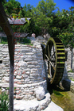
water_mill - 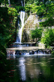
cascade - 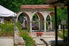
nimfeum - 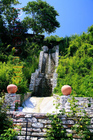
Balchik103 - 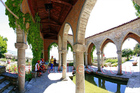
Balchik104 - 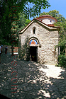
chapel - 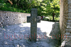
cross - 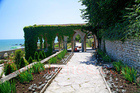
nimfeum2 - 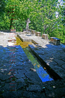
cross2
rose_garden
magnolia- 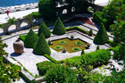
lake - 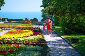
garden - 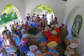
students - 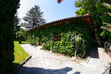
house - 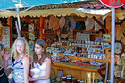
girls